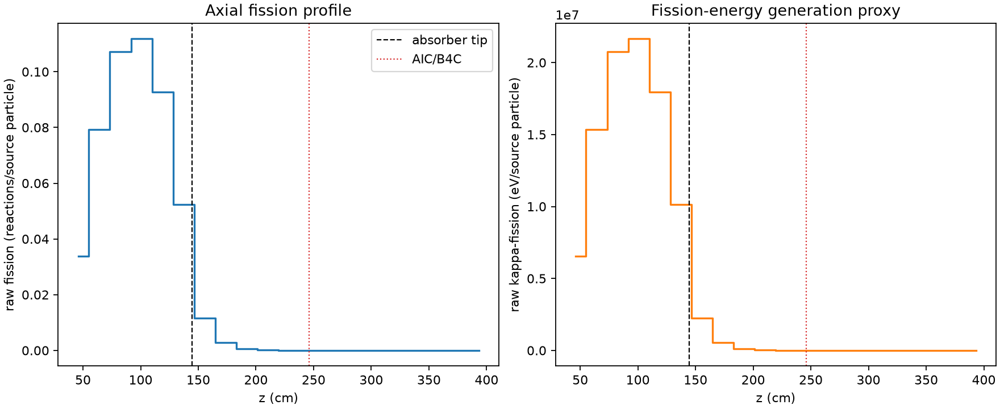
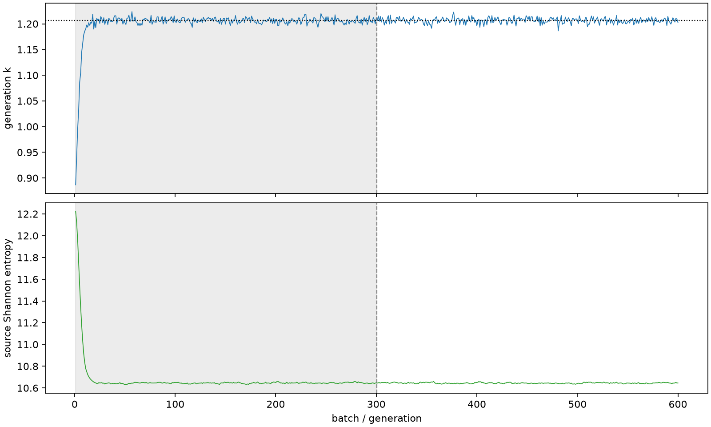

| field | value |
|---|---|
| experiment | V2-STAGE_128_OGRENCI_04-0005 |
| k | 1.2061629463323225 |
| MC standard error | 0.00020215764924633544 |
| seconds | 6299.280296080004 |
| acceptance | not_assessed |
| convergence | review_required |
Completed is output integrity only; physical and statistical review required. Zero tallies do not prove zero production or zero uncertainty.
| diagnostic | value |
|---|---|
| geometric fuel voxels | 5280 |
| zero fission tally voxels | 1596 |
| low signal fuel voxels | 2590 |
| low signal fission share | 9.999636122588801e-05 |
| low signal kappa share | 0.00010003494496333844 |
| important fission share | 0.9502372893761534 |
| previous filter included | 2690 |
| duration estimate s | 1562.5173488400023 |
| actual minus estimate s | 4736.762947240001 |
| fission relative MC error | statistics |
|---|---|
| all_geometric_fuel | {"voxels": 5280, "positive_mean_voxels": 3684, "zero_mean_voxels": 1596, "undefined_relative_error_voxels": 1596, "median": 0.01604173811717025, "p95": 0.9605226763663459, "maximum": 1.0000000000000002} |
| low_signal | {"voxels": 2590, "positive_mean_voxels": 994, "zero_mean_voxels": 1596, "undefined_relative_error_voxels": 1596, "median": 0.5245213027851077, "p95": 1.0, "maximum": 1.0000000000000002} |
| important_95pct | {"voxels": 1509, "positive_mean_voxels": 1509, "zero_mean_voxels": 0, "undefined_relative_error_voxels": 0, "median": 0.005610684227498508, "p95": 0.008869477731657272, "maximum": 0.010051605358681171} |
| outside_previous_filter | {"voxels": 2590, "positive_mean_voxels": 994, "zero_mean_voxels": 1596, "undefined_relative_error_voxels": 1596, "median": 0.5245213027851077, "p95": 1.0, "maximum": 1.0000000000000002} |
| kappa_fission relative MC error | statistics |
|---|---|
| all_geometric_fuel | {"voxels": 5280, "positive_mean_voxels": 3684, "zero_mean_voxels": 1596, "undefined_relative_error_voxels": 1596, "median": 0.016016424678967398, "p95": 0.9604343253660471, "maximum": 1.0000000000000002} |
| low_signal | {"voxels": 2590, "positive_mean_voxels": 994, "zero_mean_voxels": 1596, "undefined_relative_error_voxels": 1596, "median": 0.5240896811539658, "p95": 1.0, "maximum": 1.0000000000000002} |
| important_95pct | {"voxels": 1509, "positive_mean_voxels": 1509, "zero_mean_voxels": 0, "undefined_relative_error_voxels": 0, "median": 0.005604211048764882, "p95": 0.00885915399314938, "maximum": 0.010038808459571778} |
| outside_previous_filter | {"voxels": 2590, "positive_mean_voxels": 994, "zero_mean_voxels": 1596, "undefined_relative_error_voxels": 1596, "median": 0.5240896811539658, "p95": 1.0, "maximum": 1.0000000000000002} |
| axial bin | fission share | kappa-fission share |
|---|---|---|
| 1 | 0.06864360387826886 | 0.0686459304634242 |
| 2 | 0.16109601732570933 | 0.16109324476239587 |
| 3 | 0.21747142101414874 | 0.21746755310455643 |
| 4 | 0.22696022238725397 | 0.22695616327347418 |
| 5 | 0.1882759984751123 | 0.18827284265356836 |
| 6 | 0.10649729256273305 | 0.10649789836384316 |
| 7 | 0.023568072669455528 | 0.023576195254366796 |
| 8 | 0.005639633909434855 | 0.0056416972149422265 |
| 9 | 0.0013852374745428272 | 0.0013858081889878276 |
| 10 | 0.0003452403592514015 | 0.00034536159850260547 |
| 11 | 8.904246798656811e-05 | 8.9072232914853e-05 |
| 12 | 2.200964133289338e-05 | 2.2023207121427156e-05 |
| 13 | 5.316915030942023e-06 | 5.318661829682231e-06 |
| 14 | 7.386999209071922e-07 | 7.387646309501847e-07 |
| 15 | 1.5221981775110945e-07 | 1.5225544142344016e-07 |
| 16 | 0.0 | 0.0 |
| 17 | 0.0 | 0.0 |
| 18 | 0.0 | 0.0 |
| 19 | 0.0 | 0.0 |
| 20 | 0.0 | 0.0 |
Histories include the inactive-to-active transition at batch 300. kappa-fission approximates fission energy production, not total heat deposition.

